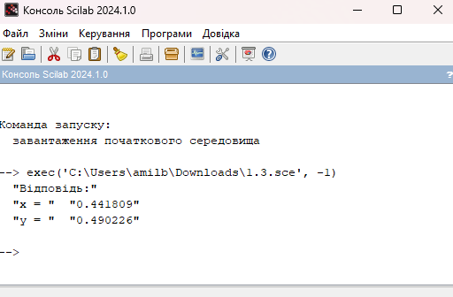
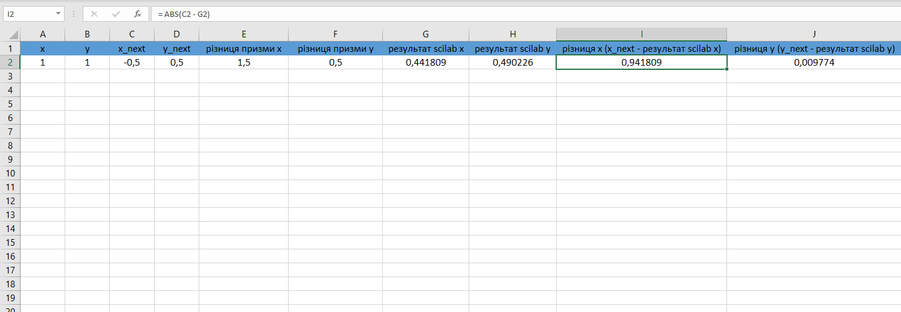

Завдання 1.3
Знайти за допомогою Scilab чисельне рішення системи. Виконати перевірку отриманого результату у MS Excel. Результати порівняти.
ВАРІАНТ 2
Функція:
\begin{cases}
x = 0.25 (x^2 - y^2) - x^2 y^2 + 0.5 \\
y = xy (x^2 - y^2) + 0.5
\end{cases}
Код Scilab:
1.2.sce
function [x_next, y_next] = simple_iteration(x, y)
x_next = 0.25*(x^2 - y^2) - x^2*y^2 + 0.5;
y_next = x*y*(x^2 - y^2)+0.5;
endfunction
function [x_sol, y_sol] = simple_iterative_method(x0, y0, max_iter, tol)
x = x0;
y = y0;
for iter = 1:max_iter
[x_next, y_next] = simple_iteration(x, y);
if norm([x_next - x; y_next - y]) < tol
break;
end
x = x_next;
y = y_next;
end
x_sol = x;
y_sol = y;
endfunction
max_iterations = 100;
tolerance = 1e-6;
x0 = 1;
y0 = 1;
[x_solution, y_solution] = simple_iterative_method(0, 0, max_iterations, tolerance);
disp(['Відповідь:']);
disp(['x = ', string(x_solution)]);
disp(['y = ', string(y_solution)]);
Результат виконання програми у Scilab (рисунок 6):

Рисунок 6 - Вивід відповіді у середовище Scilab
Результат роботи програми та порівняння результатів в Excel (рисунок 7):

Рисунок 7 - Вивід відповіді у середовище Scilab
Висновок
Порівнюючи отримані результаті у Scilab та Excel, відповідь майже ідентична в обох випадках. Похибка для x становить (0,941809) а для y (0,009774)